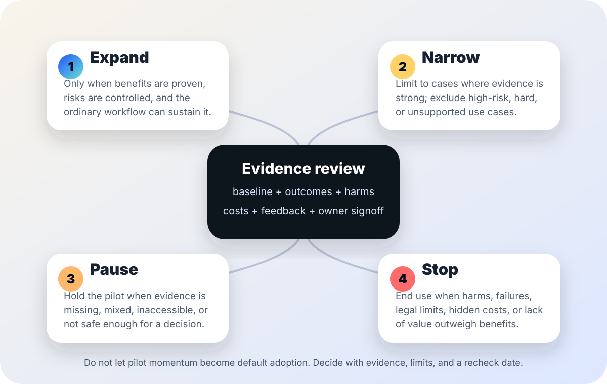

AI governance and pilot decisions
AI pilot exit criteria.
A practical checklist for deciding whether an AI pilot should expand, narrow, pause, or stop after evidence review.
The short answer
An AI pilot should not drift into permanent adoption just because the trial period ended, the tool impressed a champion, or the vendor wants a renewal. Before launch, write down what evidence would justify expansion, what evidence would require narrowing, what uncertainty would require a pause, and what harms or failures would require stopping.
Good exit criteria protect both useful innovation and affected people. They make it easier to scale a tool that truly helps, and easier to stop a tool that shifts costs, errors, privacy risk, accessibility barriers, or appeal burden onto someone else.

Why exit criteria matter
NIST’s AI Risk Management Framework emphasizes governance, mapping, measurement, management, documentation, and accountable roles across the AI lifecycle. OMB Memorandum M-24-10 directs U.S. federal agencies to manage AI uses with governance, testing, monitoring, risk management, and additional safeguards for rights- and safety-impacting uses. Those are not just launch tasks; they are decision habits for what happens after a pilot produces evidence.
The European Commission’s High-Level Expert Group ethics guidelines describe trustworthy AI as lawful, ethical, and robust, with attention to human agency, technical robustness, privacy, transparency, diversity, societal well-being, and accountability. The FTC also warns organizations not to overstate AI performance or comparative benefits without adequate proof. Together, these sources support a practical rule: do not scale a pilot unless the claimed benefits, risks, limitations, and responsibilities are visible enough to govern.
1. Write exit criteria before the pilot starts
| Criterion | Question to answer | Record to keep |
|---|---|---|
| Purpose | What decision will this pilot support: adoption, renewal, expansion, replacement, policy change, or rejection? | One-sentence pilot purpose and named decision date. |
| Baseline | What current workflow, volume, quality, cost, time, accessibility, complaint, appeal, and staff-burden data will the pilot compare against? | Pre-pilot baseline packet with date range and limitations. |
| Benefit threshold | What minimum improvement would be meaningful after review and correction costs are counted? | Metric definition, threshold, and reason it matters. |
| Quality floor | What accuracy, completeness, fairness, accessibility, language access, and user experience level must not get worse? | Quality rubric, subgroup checks, and review method. |
| Risk limit | What privacy, security, legal, safety, rights, or public-trust conditions would require pause or stop? | Risk register entry, owner role, escalation path, and stop rule. |
| Human review | Who can override, correct, appeal, or pause the AI-assisted workflow during the pilot? | Named roles, review instructions, and public-facing path if people are affected. |
| Exit meeting | Who must be in the room before the pilot can expand? | Required attendees, evidence packet, and decision authority. |
2. Use four decision gates
| Decision | Use when... | Do not use when... |
|---|---|---|
| Expand | The pilot met its benefit threshold, preserved quality floors, controlled risks, included ordinary users and representative cases, and has an owner, monitoring plan, budget, notices, training, and recheck date. | Evidence came only from easy cases, expert users, vendor demos, unreviewed outputs, or a short novelty period. |
| Narrow | The tool is useful for specific low-risk, well-reviewed cases but not for high-impact, complex, inaccessible, sensitive, or poorly measured cases. | Leaders want to call a partial success a full success without limiting scope, notices, training, or monitoring. |
| Pause | Evidence is incomplete, mixed, disputed, inaccessible, not representative, or undermined by a model update, workflow change, incident, or missing baseline. | Momentum, sunk cost, or renewal timing is the main reason to keep moving. |
| Stop | The pilot failed quality floors, created unacceptable risk, shifted hidden costs to people or staff, lacked adequate proof, or produced harms that safeguards did not control. | The only concern is that some staff disliked change; separate ordinary change-management friction from measured failure. |
3. Build a small evidence packet
Outcome evidence
Before/after measures, sample definition, case mix, hard-case results, subgroup checks, quality rubric, and uncertainty or caveats.
Workflow evidence
Review time, correction time, training, support tickets, procurement/security/privacy work, appeals, complaints, and staff burden.
Risk evidence
Incident log, privacy/security notes, accessibility review, language access checks, human-override records, model/version notes, and unresolved risks.
Decision evidence
Owner recommendation, dissenting views, public caveats, budget impact, monitoring plan, recheck date, and conditions for reversal.
4. A 45-minute exit meeting agenda
- Restate the pilot purpose. What decision is on the table today?
- Compare against the baseline. Did the workflow improve after review, rework, training, support, and exceptions were counted?
- Check the quality floor. Did accuracy, completeness, accessibility, fairness, language access, appealability, or user experience get worse?
- Name affected people and staff burden. Who benefited, who paid more attention or time, and who had less recourse?
- Review incidents and near misses. Include privacy, security, legal, safety, public communications, and trust issues.
- Choose one gate. Expand, narrow, pause, or stop. Do not combine a weak decision with confident public claims.
- Assign the next control. Set owner, scope, notice, monitoring metric, recheck date, and stop rule.
Stop rules
- Pause if the pilot has no pre-AI baseline or the baseline excludes the hardest cases.
- Pause if a model, vendor setting, policy, or workflow changed during the pilot and results can no longer be interpreted.
- Pause if the evidence packet lacks accessibility, language access, privacy, security, or appeal review for affected people.
- Stop if the tool repeatedly fails quality floors or creates harms that human review cannot reliably catch in time.
- Stop if the only support for expansion is anecdote, vendor marketing, or a dashboard that counts outputs but not rework.
- Proceed only when the decision, evidence, limits, owner, monitoring plan, and reversal path can be explained plainly.
Starter language for an exit decision
Use this in a decision memo, adapting it to your setting:
AI pilot exit decision: The pilot tested [tool/workflow] for [purpose] from [date] to [date]. Compared with [baseline], the evidence shows [result] for [population/use case], with limitations [limits]. Quality, accessibility, privacy, security, appeals, staff burden, and public-impact checks were reviewed. The decision is to [expand/narrow/pause/stop] because [reason]. The owner is [role], the scope is [scope], and the next review or reversal trigger is [date/condition].
Related field guide pages
Sources
- NIST — AI Risk Management Framework: https://www.nist.gov/itl/ai-risk-management-framework
- Office of Management and Budget — Memorandum M-24-10, Advancing Governance, Innovation, and Risk Management for Agency Use of Artificial Intelligence: https://www.whitehouse.gov/wp-content/uploads/2024/03/M-24-10-Advancing-Governance-Innovation-and-Risk-Management-for-Agency-Use-of-Artificial-Intelligence.pdf
- European Commission — Ethics guidelines for trustworthy AI: https://digital-strategy.ec.europa.eu/en/library/ethics-guidelines-trustworthy-ai
- Federal Trade Commission — Keep your AI claims in check: https://www.ftc.gov/business-guidance/blog/keep-your-ai-claims-check
This page is public education, not legal, procurement, audit, statistical, or risk-management advice. Pilot decisions need local facts, applicable law, affected-community input, and qualified human accountability.